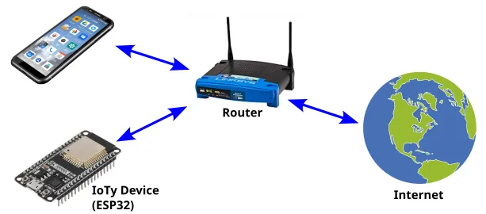
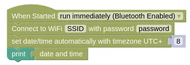
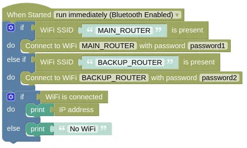
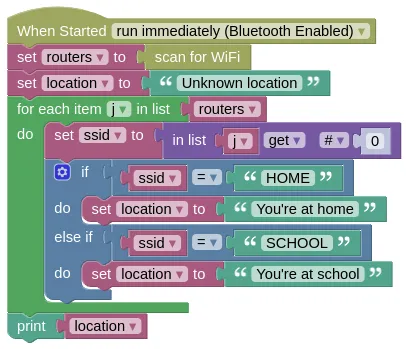

Client Mode

In Client Mode (aka. Station Mode), your IoTy device will connect to a WiFi router.
Your device will have internet access (...provided your router is connected to the internet), and will be able to...
- Retrieve webpages and data (see urequest extension)
- Connect to an MQTT broker (see the MQTT page for more info)
- Act as a webserver (see EZ HTTPD extension)
Basic Connection
This example connects to WiFi, retrieves the date/time, and prints it out. You must put in your actual WiFi SSID and password or this will not work.
Blocks

Note that the set date/time block is under the Control category.
Python
import ioty.wifi
import ntptime
import machine
ioty.wifi.connect('SSID', 'password') # Put in actual WiFi SSID/Password
# Retrieves the UTC time from the internet and set your device clock to it
ntptime.settime()
# Retrieve the time, add 8 hours, and set it back.
# This changes the time from UTC to UTC+8
# UTC+8 is the timezone here in Singapore; change if you live somewhere else.
dateTime = list(machine.RTC().datetime())
dateTime[4] += 8
machine.RTC().datetime(dateTime)
# Prints the date/time
print(machine.RTC().datetime())
ntptime.settime() may fail due to network conditions and throw an exception. It's best to put it in a try except to handle such failures.
Multiple Routers
You may want to use your device at home (...using home router), and outside (...using phone hotspot). In such cases, you can first check which router is present before trying to connect to it.
This example demonstrates checking for the presence of two different routers, before connecting and printing the assigned IP address.
Blocks

Python
import ioty.wifi
import ntptime
import machine
routers = [
['MAIN_ROUTER', 'password1'],
['BACKUP_ROUTER', 'password2']
]
for router in routers:
if ioty.wifi.is_present(router[0]):
ioty.wifi.connect(router[0], router[1])
break
if ioty.wifi.isconnected():
print(ioty.wifi.get_ip())
else:
print('No WiFi')
Scanning for WiFi
Even without connecting to a router, simply scanning for the available WiFi can provide a rough indication of your device location (ie. at home or at school).
This example scans for WiFi, checks for the presence of the "HOME" router and "SCHOOL" router, and prints its approximate location.
Blocks

Python
import ioty.wifi
routers = ioty.wifi.scan()
location = 'Unknown location'
for j in routers:
ssid = j[0]
if ssid == 'HOME':
location = "You're at home"
elif ssid == 'SCHOOL':
location = "You're at school"
print(location)